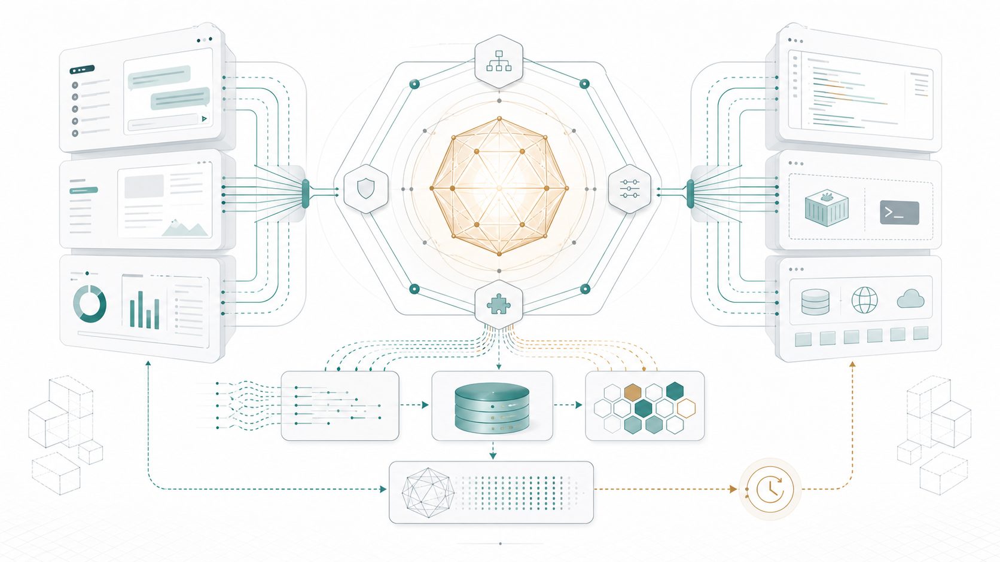
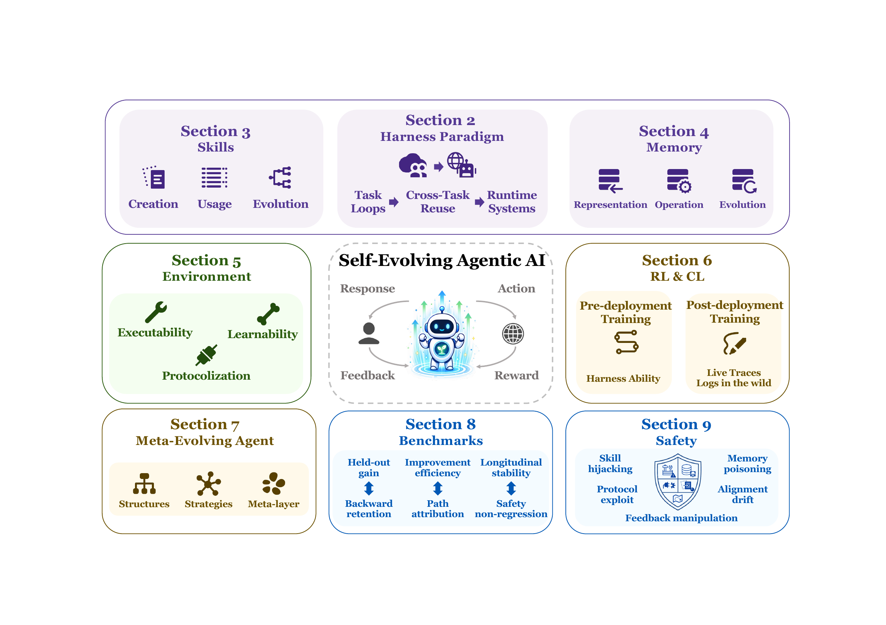
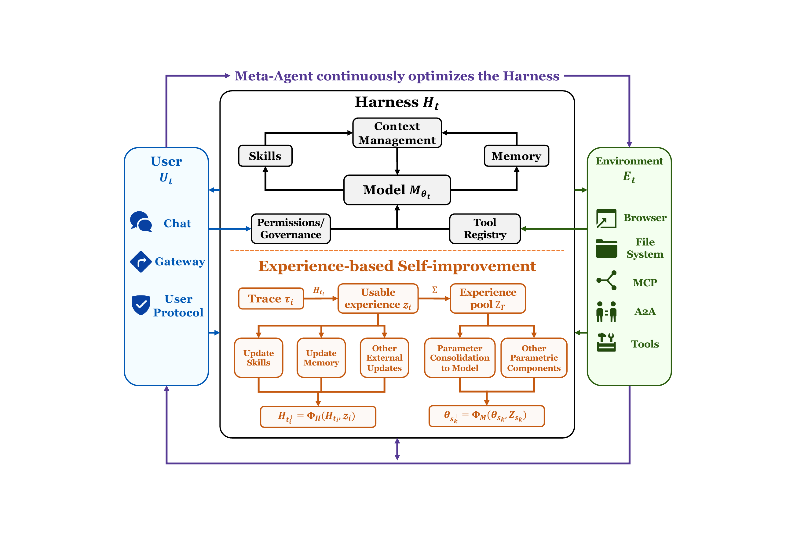
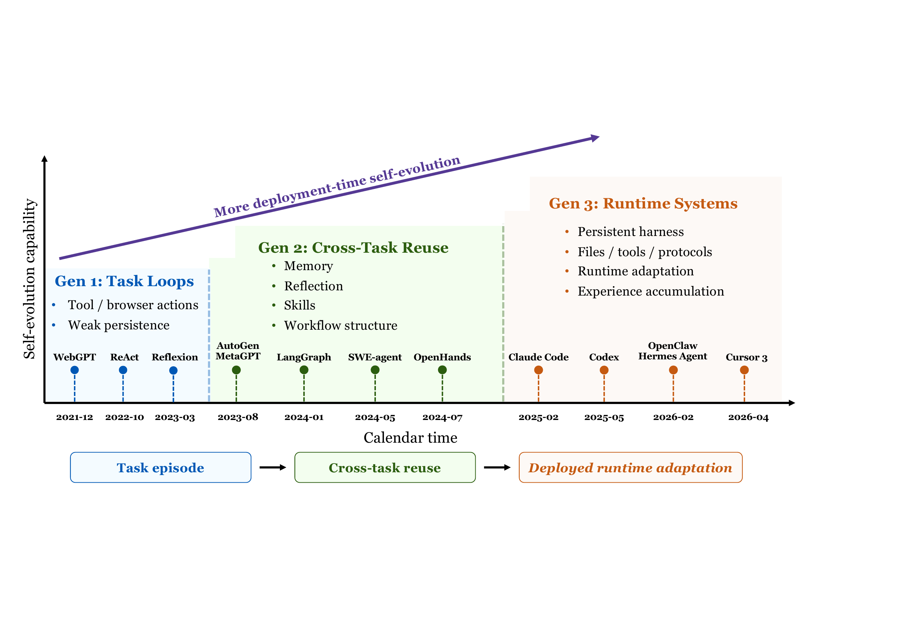
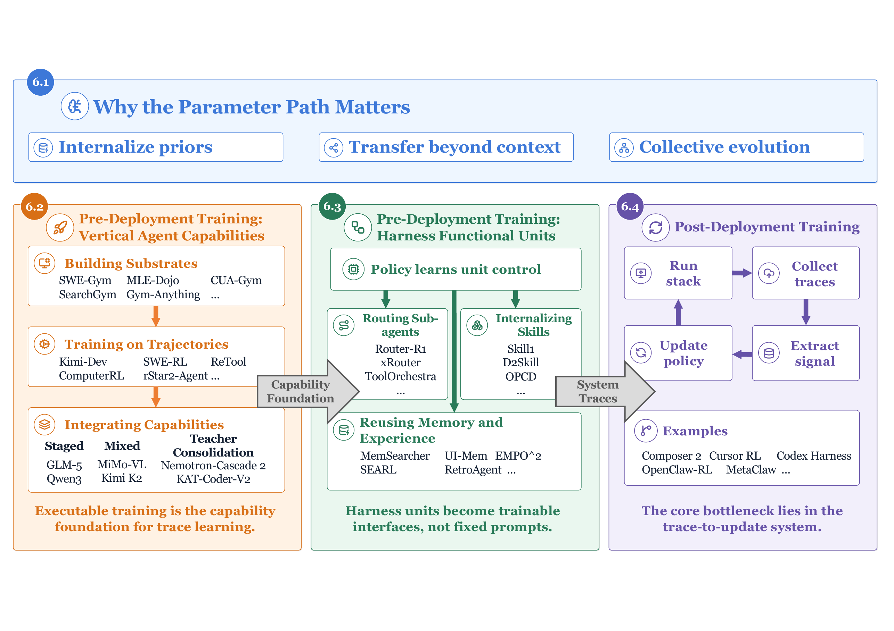
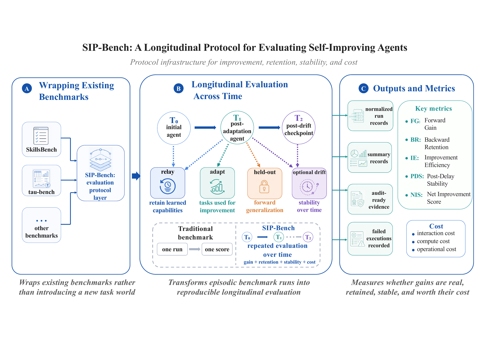

A Survey of Agents in the Era of Experience: Skills, Harness, and Self- to Meta-Evolution
In the Era of Experience, agentic AI is no longer defined only by what a model can infer from static data, but by how a deployed system accumulates, organizes, and reuses experience from interaction. This survey studies experience-driven improvement in deployed agentic AI systems. We focus on the runtime harness as the infrastructure that captures traces, routes actions, exposes feedback, and governs mutable state. Around this infrastructure, we review how experience becomes reusable skill, persistent memory, verifiable environment feedback, trainable model behavior, and meta-level control. We then identify the remaining barriers to reliable improvement, including longitudinal evaluation, transfer, verification, and safety governance. Making agents smarter after deployment is therefore a trace-to-capability problem: the field must learn how to capture experience, assign it to the right update surface, verify its value, and preserve control as the system changes.
- 111
- papers
- 9
- paper chapters
- 10
- sections
Overview of the survey.

Harness as Experience Infrastructure

How Did We Get Here? From Task Loops to Runtime Systems
From Experience Destinations to Improvement Paths
Related Surveys
How Did We Get Here? From Task Loops to Runtime Systems

From Experience Destinations to Improvement Paths
Parameter-side learning for stronger agents after deployment.


Paper List
The rows are generated from the Awesome-Self-Improving-Agents paper list and mapped onto exact LaTeX manuscript section headings for Chapter and Phase.
- 0
- matched
- 0
- indexed
Showing 0 papers
| Date | Chapter | Paper | Phase | Signal |
|---|
Page 1 of 1